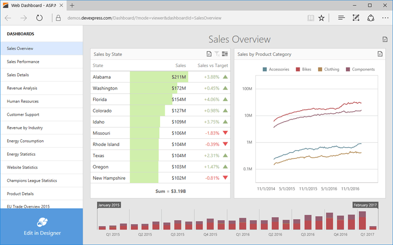

Web Dashboard - Viewer Mode
The Web Dashboard provides the capability to display dashboards in web browsers on desktop and mobile devices.

Data Presentation
The topics in this section provide information on how the Web Dashboard presents data.
Mobile Layout
The Web Dashboard uses a mobile layout to display dashboards on phones and tablets.
Dashboard Parameters
The following topic describes how to change dashboard parameter values.
Exporting
The Web Dashboard provides the capability to export individual items of a dashboard, as well as the entire dashboard.
Dashboard Items
Dashboard items are used to present information in various ways.